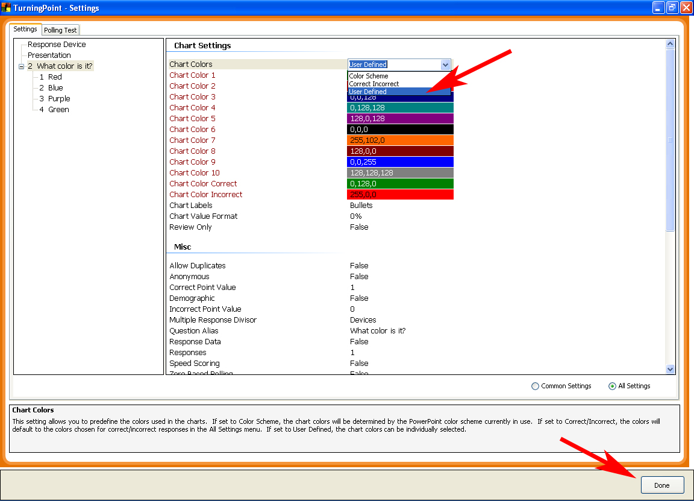
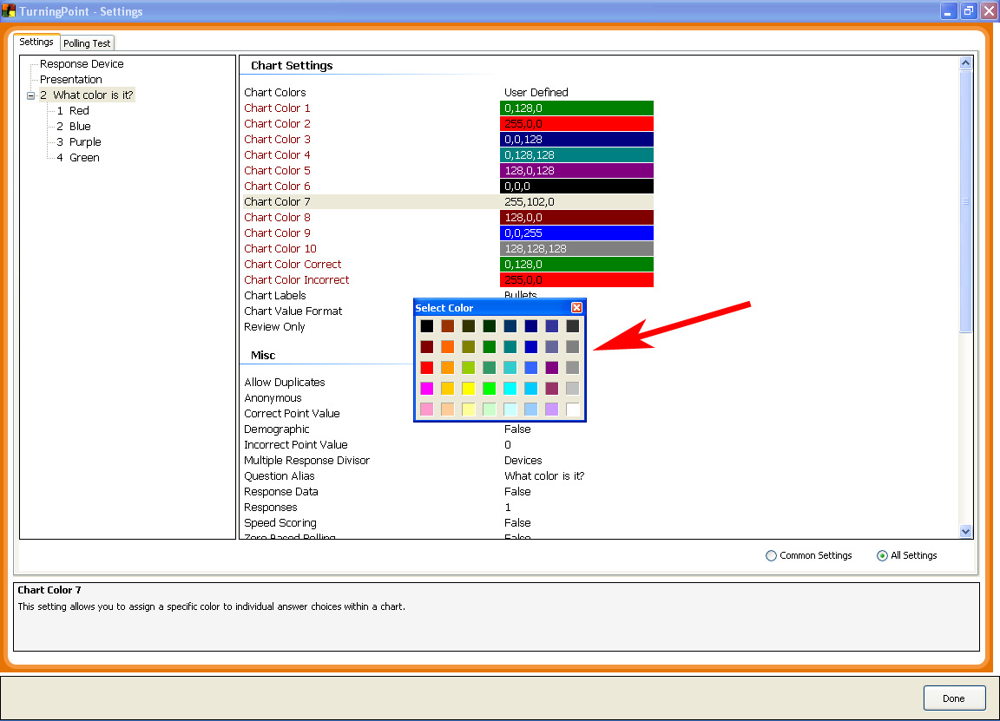

Changing the colors of response graphs:
TurningPoint allows the user to change the color options of the response graphs. Within the “Settings” menu you will find “Chart Settings” (Be sure you have selected “All Settings” in the lower right of the Settings menu). There are three color settings to choose from:
- Color Scheme – Uses the current PowerPoint color settings to determine the chart colors.
- Correct Incorrect – Bars that correspond to answers that have been identified as “Correct” will appear green. Bars that correspond to answers that have been identified as “Incorrect” will appear red.
- User Defined – Allows the user to define the colors of individual bars in the graph (see below).
Setting User Defined bar graph colors
- From the “TurningPoint 2008” tab, click on the “Tools” icon.
- Scroll down to “Settings” and select it.
- In “Settings”, make sure that the slide that you want to alter is selected. Or, if you want to modify the answer graph colors on all slides in your presentation, select “Presentation”.
- On the lower right, switch from “Common Settings” to “All Settings”.
- Scroll to the “Chart Settings” section, click on “Color Scheme” and change it to “User Defined”.

- Click on the color bar next to Chart Color 1.
- Select a color from the “Select Color” Color Swatch. This color will be the color applied to the first answer in the answer graph.

- Repeat this process for the rest of the color settings.
- If applying the color changes to the entire Presentation, be sure to click the “Apply All” button.
- Click “Done” button in the bottom right hand corner.